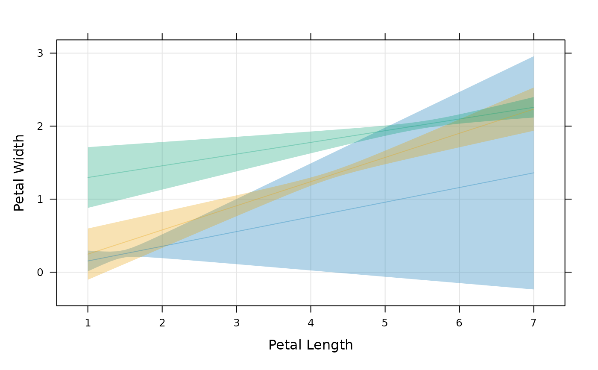

Prepanel for ciplot
Arguments
- x, y
x and y values, numeric or factor
- lower
lower confidence limits
- upper
upper confidence limits
- groups, subscripts
See
xyplot. Whenever appropriate, calculations are done separately for each group and then combined.- ...
other arguments, usually ignored
Examples
mod <- lm(Petal.Width ~ Petal.Length * Species, data = iris)
newdat <- expand.grid(
Petal.Length = seq(1, 7, by = 0.1),
Species = c("setosa", "versicolor", "virginica")
)
pred <- predict(mod, newdat, interval = "confidence")
dd <- cbind(newdat, pred)
xyplot(
fit ~ Petal.Length,
groups = Species, data = dd,
prepanel = prepanel.ci,
ylab = "Petal Width",
xlab = "Petal Length",
lower = dd$lwr, upper = dd$upr, alpha = 0.3,
panel = function(...) {
panel.ci(..., grid = TRUE)
panel.xyplot(type = "l", ...)
}
)
